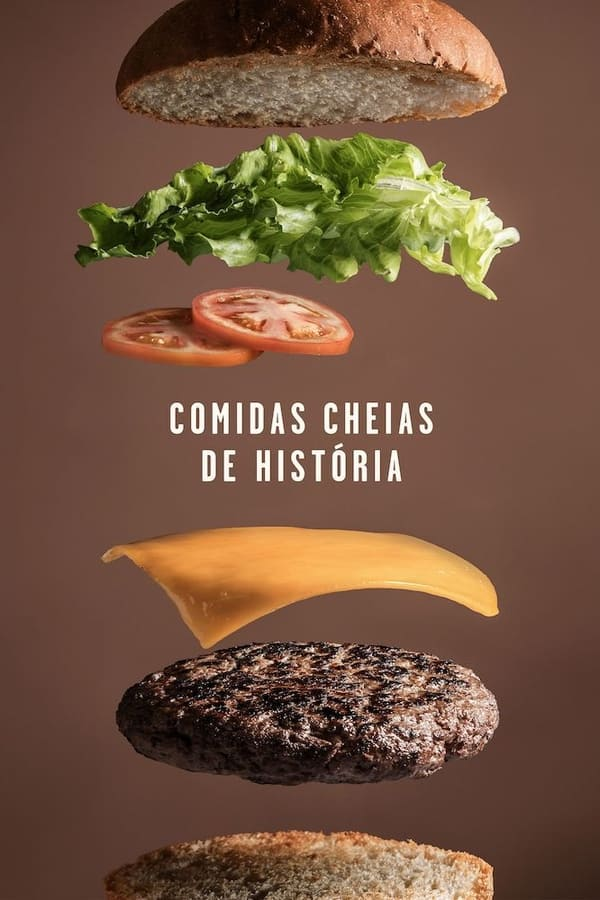
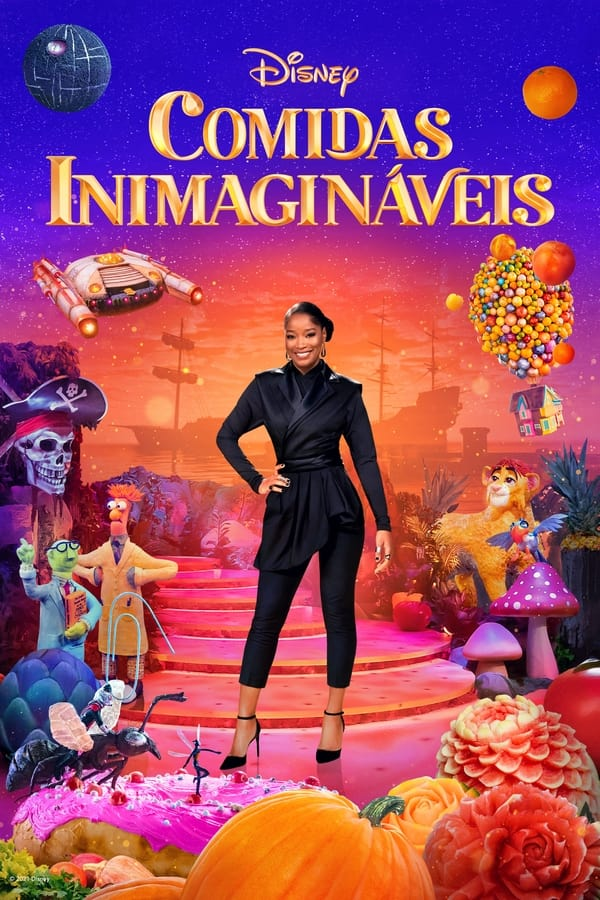
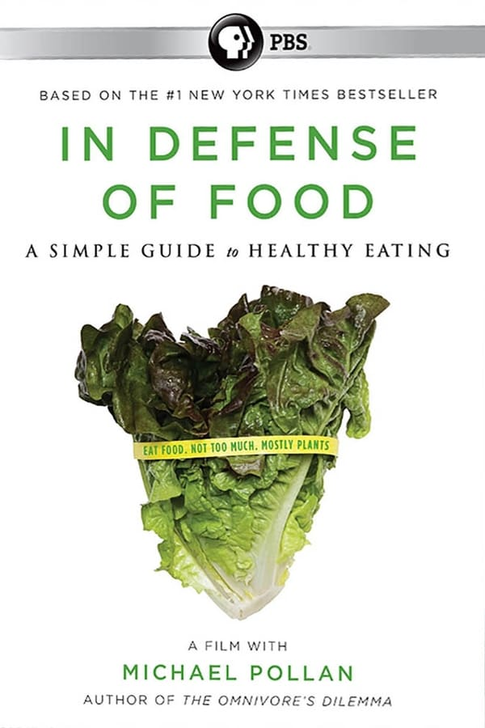
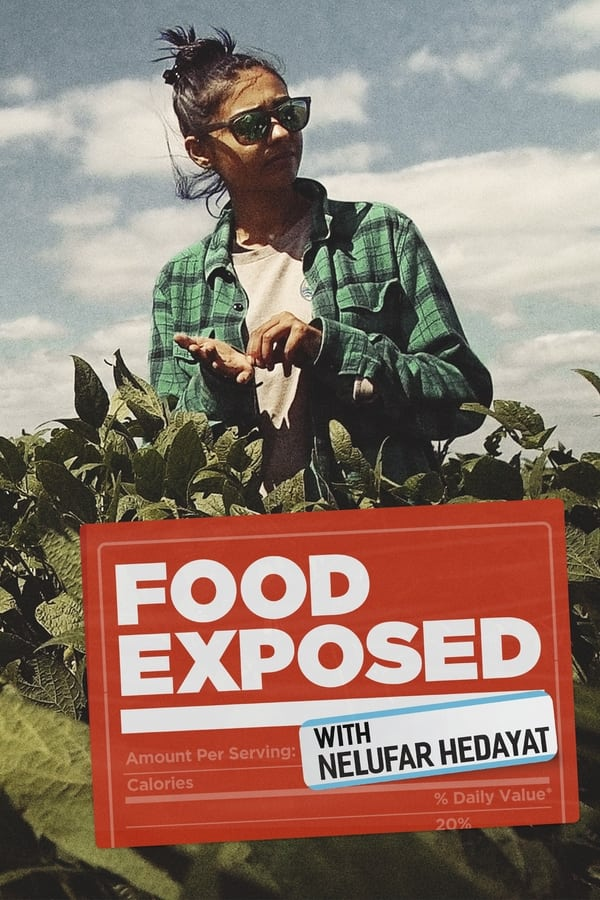
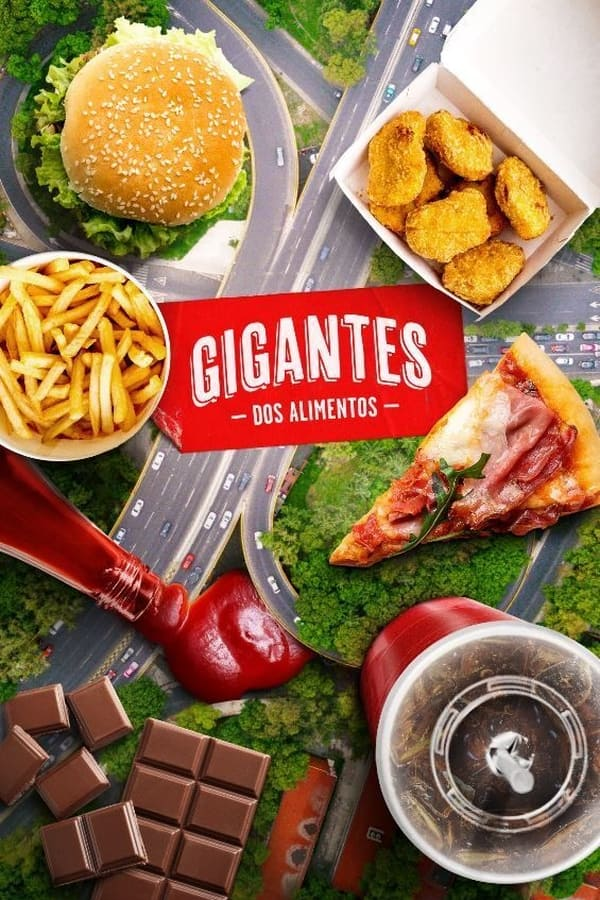
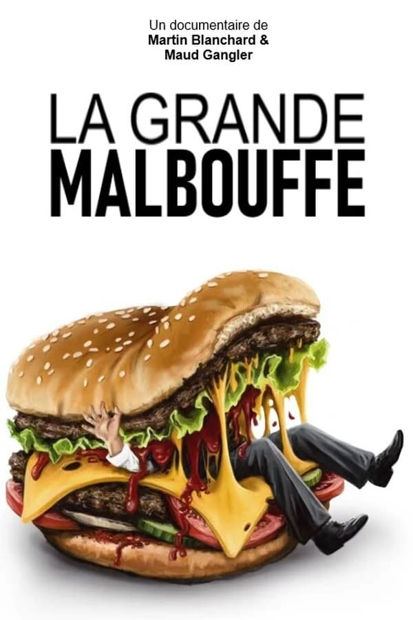
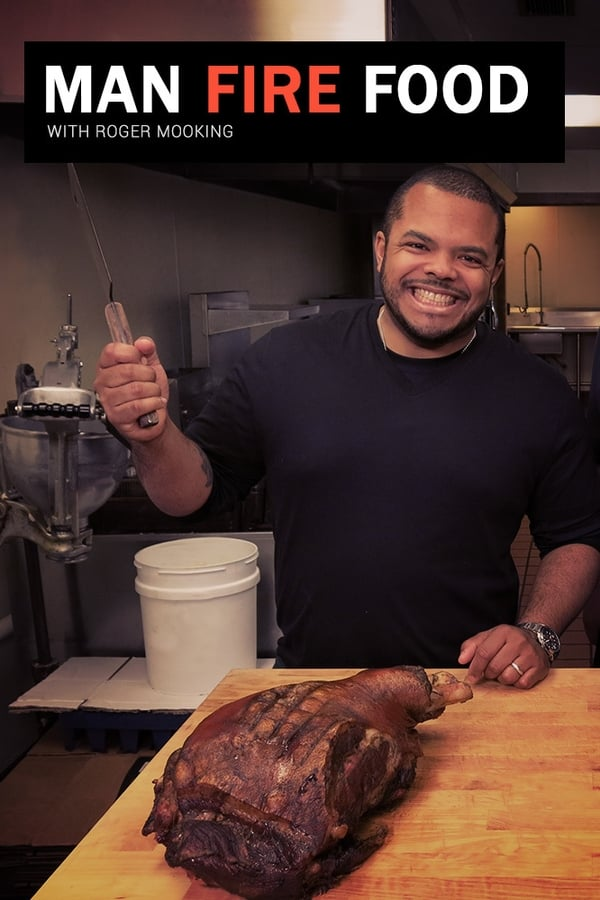
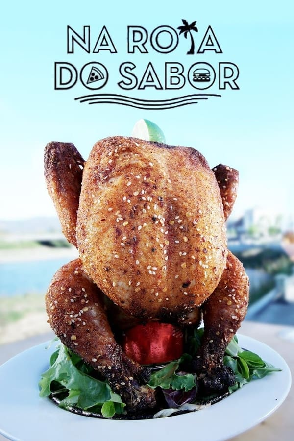
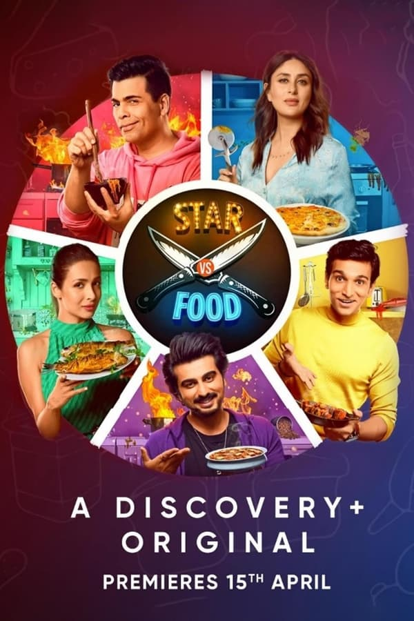
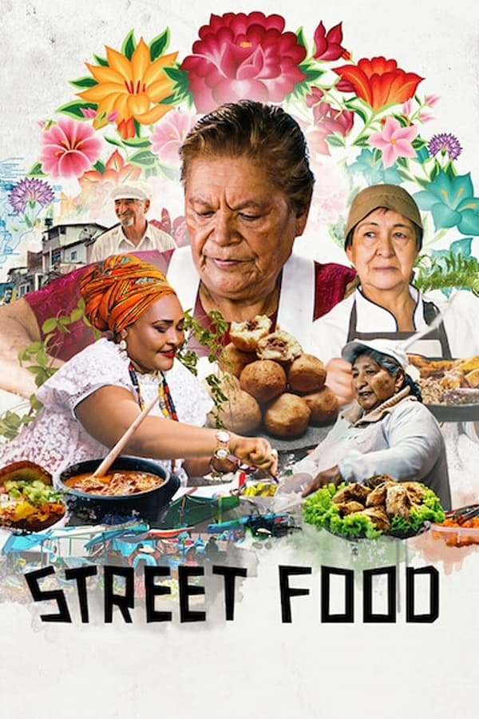

Destaque da semana
Food, Inc.
Uma investigação sobre a cadeia de produção dos alimentos nos Estados Unidos, seus monopólios, impactos ambientais e os efeitos desse sistema na vida das pessoas.
Curadoria FoodFlix
Para continuar explorando
Histórias sobre comida, cultura, indústria e memória.









Mais do que assistir
Comida também conta histórias.
O FoodFlix reúne títulos que ajudam a enxergar alimentação por novos ângulos: tradição, identidade, sustentabilidade, indústria e afeto.
10
títulos selecionados nesta curadoria